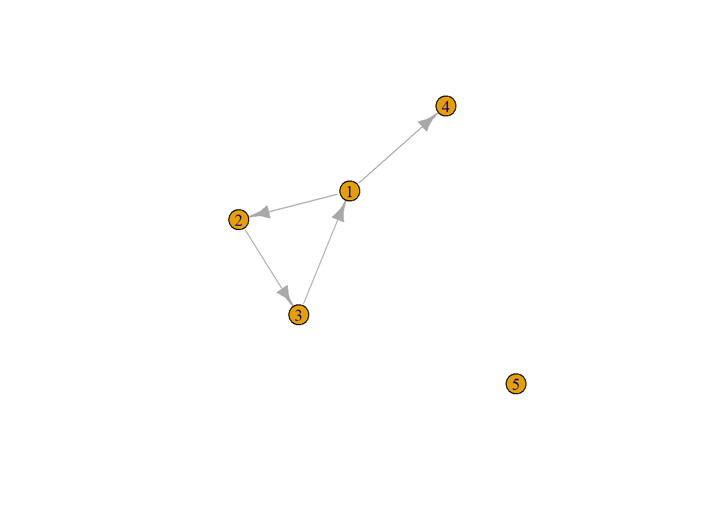
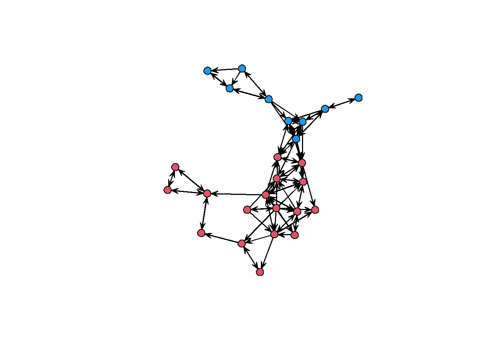
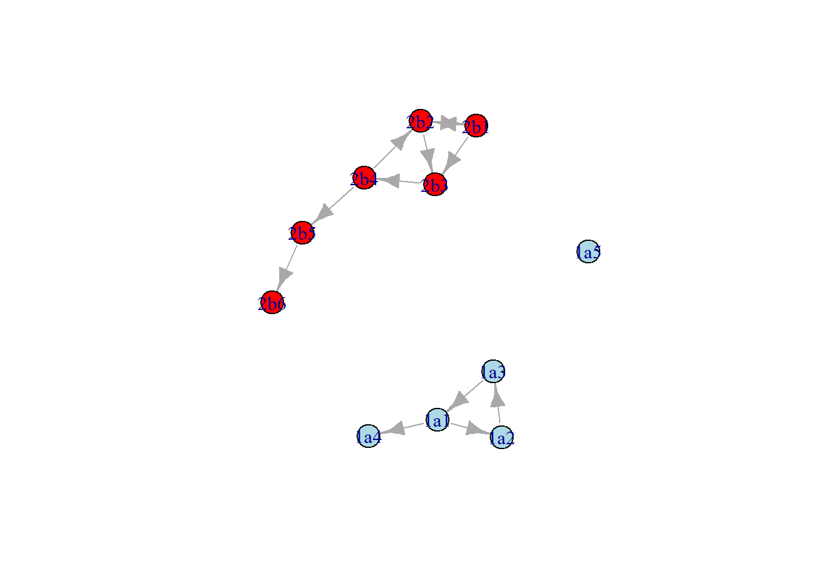

6 A deeper dive into data handling: complications in name generator data
In a previous tutorial, we’ve covered processing ‘adjacency list’ data, as typically generated by surveys with name generator questions, as network data. With real-life data, such data sets often have quirks that can create havoc in your data processing procedures if you’re not carefull. In the earlie tutorial, we already discussed one such quirk, namely the presences of isolates. In this tutorial, we cover two more challenges:
- The presence of alters who are missing as respondents (egos);
- The processing of multiple subnetworks (in our scenario: school classes) at the same time.
Let’s get started.
For practice, we use a toy dataset that was designed for looking just like the Knecht data (but smaller).
##
## 1a 2b
## 5 5## schoolnr namenr age friend1 friend2
## 1 1a 1 20 2 4
## 2 1a 2 21 3 NA
## 3 1a 3 25 1 NA
## 4 1a 4 NA NA NA
## 5 1a 5 21 NA NA
## 6 2b 1 22 2 3
## 7 2b 2 24 1 3
## 8 2b 3 NA NA 4
## 9 2b 4 21 2 5
## 10 2b 5 20 6 NA6.1 The case of the missing ego
Let’s start with importing one class, as before:
cls <- "1a"
edge_list <- df %>%
filter(schoolnr == cls) %>%
select(namenr, friend1:friend2) %>%
melt(id.vars = "namenr") %>% #make long
filter(!is.na(value)) %>% # drop the missings
rename(from ="namenr", to = "value", sourcevar= "variable") %>% #just nice for interpretation
relocate(to, .after=from) #move around the columns
edge_list## from to sourcevar
## 1 1 2 friend1
## 2 2 3 friend1
## 3 3 1 friend1
## 4 1 4 friend2nodelist <- df %>%
filter(schoolnr == cls) %>%
select(namenr,age)
g1a <- graph_from_data_frame(edge_list, vertices = nodelist)
plot(g1a)
So far, so good.
Now let’s try with the other class:
cls <- "2b"
edge_list <- df %>%
filter(schoolnr == cls) %>%
select(namenr, friend1:friend2) %>%
melt(id.vars = "namenr") %>% #make long
filter(!is.na(value)) %>% # drop the missings
rename(from ="namenr", to = "value", sourcevar= "variable") %>% #just nice for interpretation
relocate(to, .after=from) #move around the columns
edge_list## from to sourcevar
## 1 1 2 friend1
## 2 2 1 friend1
## 3 4 2 friend1
## 4 5 6 friend1
## 5 1 3 friend2
## 6 2 3 friend2
## 7 3 4 friend2
## 8 4 5 friend2nodelist <- df %>%
filter(schoolnr == cls) %>%
select(namenr,age)
g2b <- graph_from_data_frame(edge_list, vertices = nodelist) ## Error in graph_from_data_frame(edge_list, vertices = nodelist): Some vertex names in edge list are not listed in vertex data frameProblem: Now this leads to an error, as there is a vertex nominated as friend who is not in the data as an ‘ego’. The igraph function graph_from_data_frame() does not allow this.
QUESTION: What is a plausible data collection scenario under which this could happen?
Solution: We need to fix the node list to include this missing vertex. First let’s create a list of all the vertices that appear in the edge list:
Then, we remove duplicates:
nodelist <- df %>%
filter(schoolnr == cls) %>%
select(namenr,age, schoolnr) %>%
merge(all_vertices, by = "namenr", all.y = T)
nodelist## namenr age schoolnr
## 1 1 22 2b
## 2 2 24 2b
## 3 3 NA 2b
## 4 4 21 2b
## 5 5 20 2b
## 6 6 NA <NA>We now have a node list that includes all the nodes. Obviously, ‘age’ is missing for node 6 in these data, as node 6 was not included as a respondent in the data in the first place. However, ‘schoolnr’ is also missing, even if we know that node 6 was in this class too. So let’s fix that:
## namenr age schoolnr
## 1 1 22 2b
## 2 2 24 2b
## 3 3 NA 2b
## 4 4 21 2b
## 5 5 20 2b
## 6 6 NA 2b6.2 Multiple networks
Now let’s try to import the two classes into a network object at once, as if they are a single network.
edge_list <- df %>%
select(namenr, friend1:friend2) %>%
melt(id.vars = "namenr") %>% #make long
filter(!is.na(value)) %>% # drop the missings
rename(from ="namenr", to = "value", sourcevar= "variable") %>% #just nice for interpretation
relocate(to, .after=from) #move around the columns
all_vertices <- append(edge_list$from, edge_list$to) %>%
unique() %>%
as.data.frame() %>%
rename(namenr = ".")
nodelist <- df %>%
select(namenr,age, schoolnr) %>%
merge(all_vertices, by = "namenr", all.y = T, all.x = T)
g2 <- graph_from_data_frame(edge_list, vertices = nodelist) ## Error in graph_from_data_frame(edge_list, vertices = nodelist): Duplicate vertex namesHouston, we’ve got a problem.
We need to be able to differentiate between the nodes from different classes, both for repondents (“egos”) and nominees (“alters”). Let’s start with the ego, which is the simplest case. We can create a unique student ID by combining the class identifier and the within-class identifier:
Now let’s start over, using this new identifier instead of ‘namenr’.
edge_list <- df %>%
select(id_pupil, schoolnr, friend1:friend2) %>%
melt(id.vars = c("id_pupil","schoolnr")) %>% #make long
filter(!is.na(value)) %>% # drop the missings
rename(from ="id_pupil", to = "value", sourcevar= "variable") %>% #just nice for interpretation
relocate(to, .after=from) #move around the columns
edge_list## from to schoolnr sourcevar
## 1 1a1 2 1a friend1
## 2 1a2 3 1a friend1
## 3 1a3 1 1a friend1
## 4 2b1 2 2b friend1
## 5 2b2 1 2b friend1
## 6 2b4 2 2b friend1
## 7 2b5 6 2b friend1
## 8 1a1 4 1a friend2
## 9 2b1 3 2b friend2
## 10 2b2 3 2b friend2
## 11 2b3 4 2b friend2
## 12 2b4 5 2b friend2Now we can also create the unique student ID for alters in the ‘to’ column of the edge list:
## from to schoolnr sourcevar
## 1 1a1 1a2 1a friend1
## 2 1a2 1a3 1a friend1
## 3 1a3 1a1 1a friend1
## 4 2b1 2b2 2b friend1
## 5 2b2 2b1 2b friend1
## 6 2b4 2b2 2b friend1
## 7 2b5 2b6 2b friend1
## 8 1a1 1a4 1a friend2
## 9 2b1 2b3 2b friend2
## 10 2b2 2b3 2b friend2
## 11 2b3 2b4 2b friend2
## 12 2b4 2b5 2b friend2The result is a neat list of within-class ties. We continue with creating the node list:
all_vertices <- append(edge_list$from, edge_list$to) %>%
unique() %>%
as.data.frame() %>%
rename(id_pupil = ".")
nodelist <- df %>%
select(id_pupil,age, schoolnr) %>%
merge(all_vertices, by = "id_pupil", all.y = T, all.x = T)g2 <- graph_from_data_frame(edge_list, vertices = nodelist)
plot(g2, vertex.color = ifelse(V(g2)$schoolnr=="1a", "lightblue", "red"))
Almost correct! The one thing to fix is that now we don’t have the schoolnr for node 2b6. The approach that we used earlier doesn’t work now (why not?), but recall that we already have schoolnr for each edge in ‘edge_list’. We use that to keep schoolnr with the list of all vertices (all_vertices) and keep it in the merge with the node list. The method for constructing all_vertices is a little different now.
all_vertices <- edge_list %>%
select(id_pupil = from, schoolnr) %>%
bind_rows(edge_list %>%
select(id_pupil = to, schoolnr)) %>%
unique() %>%
rename(schoolnr_from_edges = schoolnr)
nodelist <- df %>%
select(id_pupil,age, schoolnr) %>%
merge(all_vertices, by = "id_pupil", all.y = T, all.x = T)We now replace any NA’s in schoolnr with the value in schoolnr_from_edges. For tidiness, we remove schoolnr_from_edges as we don’t need it to be imported in our network object (of course there may be scenarios where you may want to keep it).
nodelist <- nodelist %>%
mutate(schoolnr = coalesce(schoolnr,schoolnr_from_edges)) %>%
select(-schoolnr_from_edges)
g2 <- graph_from_data_frame(edge_list, vertices = nodelist)
plot(g2, vertex.color = ifelse(V(g2)$schoolnr=="1a", "lightblue", "red"))
Done!